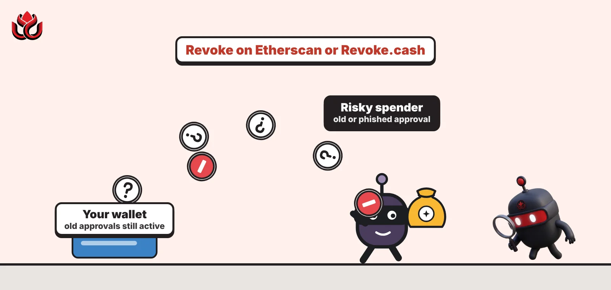
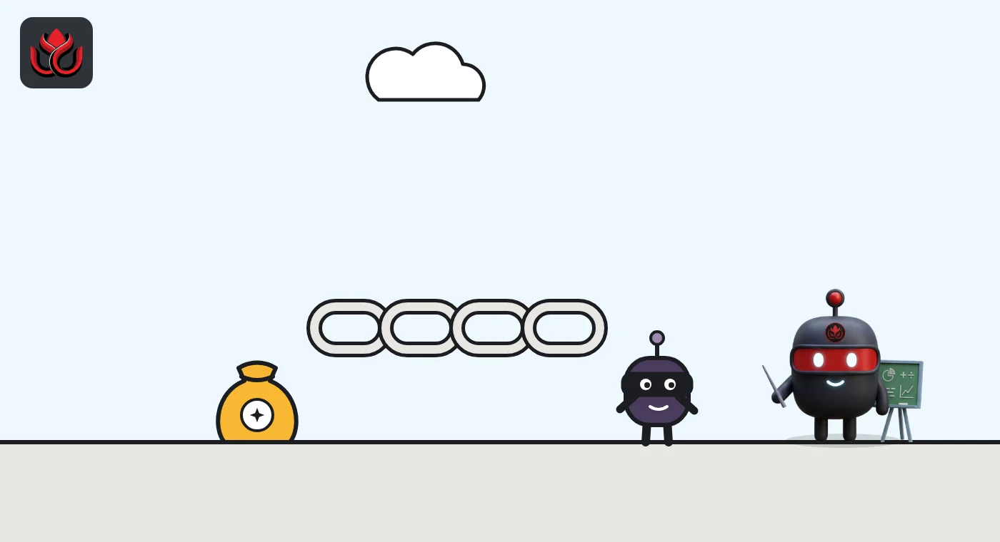
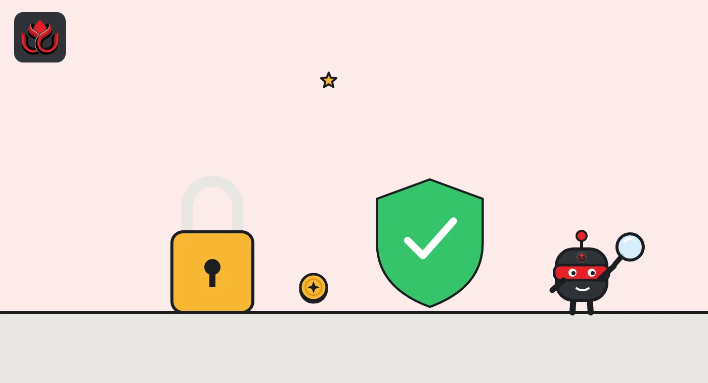

How to check and revoke token approvals before an old one drains your wallet
Look up your wallet address in an approval checker such as Etherscan's Token Approvals page or Revoke.cash, find spenders you no longer use or do not recognize, and revoke them. Each revoke is an on-chain transaction, so it costs a small network fee.

Key points
- A token approval lets a smart contract spend a set amount of one of your tokens. Many approvals are unlimited and never expire on their own.
- You can view approvals without connecting a wallet by pasting your address into an approval checker. You need to connect the wallet only to revoke.
- Revoking sends a transaction that sets the permission to zero, so it costs gas. It stops future spending but does not return anything already taken.
- Permit signatures do not show up until used, and Permit2 needs its own review. A compromised seed phrase cannot be fixed by revoking.
 What DeepSea's data shows
What DeepSea's data shows
Revoking approvals is standard advice after a wallet compromise. DeepSea's page on the D'CENT app drain, which it puts at $20.00 million in XRP taken from about 6,700 app wallets in September, tells affected users to revoke token approvals and check the signers on any multisig that used an app-based key.
DeepSea's scam alerts page also flags more than 5,000 phishing addresses and more than 1,000 linked to exploits.
Data: DeepSea (desea.io), checked November 2, 2026, 7:59 a.m. ET.
What is a token approval?
When you use a decentralized app, such as a token swap, you first let its smart contract spend your tokens. That permission is a token approval. It is recorded on the blockchain and names three things: the token, the spender (the contract allowed to move it) and the amount.
Approvals are useful, but Revoke.cash, a free approval tool, notes they stay active indefinitely unless you revoke them. Etherscan's help page adds that approvals often allow a contract to spend an unlimited amount of a token by default, so it can move funds at any time. The same page cites one case in which a user lost $140,000 worth of a token this way.
Why should you revoke old approvals?
Two risks. First, phishing: if you approved a malicious contract on a fake site, it can drain that token whenever it wants. Second, hacks of real projects: if a protocol you once used is exploited, the attacker may be able to use your old approval.
Revoke.cash keeps a list of approval exploits that counted more than $356 million stolen since 2020 as of November 2, 2026. Approvals go wrong for organizations too. Security firm SlowMist's Hacked database lists a $7.45 million loss from an unnamed Safe multisig wallet on Avalanche on October 26, 2026, which it attributes to misconfigured token approvals that an automated trading bot front-ran. LC Insight covered it in our late October hacks roundup.

How do you check approvals on Etherscan?
Etherscan, the main Ethereum block explorer, has a Token Approvals page. Revoke.cash's walkthrough describes these steps, which also work on sister explorers such as Polygonscan and BscScan:
- Open the Token Approvals page from the More menu.
- Enter your wallet address. Etherscan's help page says you can look up an address or ENS name without connecting a wallet.
- Choose the token type: ERC20 for regular tokens, ERC721 or ERC1155 for NFTs.
- Turn on Show all approvals.
- To revoke, connect your wallet and click Revoke next to the approval.
Etherscan also lets you lower an approved amount instead of removing it.
How do you check approvals with Revoke.cash?
Revoke.cash works across many networks; its guide says it supports more than 80. The steps it lists:
- Enter your address or ENS name in the search bar, or connect your wallet.
- Select the network. Approvals are per chain, so check each chain you have used.
- Review the list. If you suspect a malicious approval, sort from newest to oldest. You can also search by spender address.
- Click Revoke, or use the pencil icon to reduce the allowed amount and keep some access.
Look for spenders you do not recognize, apps you no longer use and very large or unlimited amounts. Etherscan's help page suggests looking out for suspicious contracts with very large approved amounts.

What about permits and Permit2?
Not every permission is a normal approval. A permit is a signed message that becomes an approval only when someone submits it. Revoke.cash says no tool can know which permits you have signed until they are used. Once used, a permit appears as a regular approval and can be revoked like one. Before that, you may be able to cancel it from Revoke.cash's Signatures tab, though attackers often act fast.
Permit2, built by the Uniswap team, works differently. You give the Permit2 contract one unlimited approval, and it hands out sub-approvals with expiry times. Revoke.cash suggests revoking the base approval to Permit2 when you no longer use it, and revoking long-dated sub-approvals manually.
Should you revoke approvals for apps you trust?
Often, yes, if you no longer use them. Trust in an app today says little about its code in two years. Revoke.cash points out that established projects have been hacked, and that an old approval can leave you exposed long after you stop using a service.
Its exploit list makes the point. It notes that the Multichain exploit from 2022 and Zapper's Polygon bridge exploit from 2021 are still draining wallets in 2026, because users never removed approvals they gave years ago. Larger cases on the list include BadgerDAO in December 2021, about $111 million, and Radiant Capital in October 2024, about $60 million.
For apps you use every week, a middle path is to lower the allowance instead of removing it. Both Etherscan and Revoke.cash let you edit the approved amount, so an app can spend what you plan to use and no more.
The cheapest protection comes before any of this. MetaMask's signature phishing guide warns that users can hand over an unlimited token approval without realizing it, and points readers to its guide on setting a spending cap. Ethereum.org gives the same advice: approve only the amount a transaction needs.
What can revoking not do?
Revoking is preventive. It stops future spending through that approval. It does not reverse transfers that already happened, and Revoke.cash's guide for victims says stolen assets generally cannot be recovered on-chain.
It also cannot fix a stolen recovery phrase. If the attacker has your phrase, they control the wallet directly and do not need approvals. Signs of that include assets vanishing across several chains at once or new deposits disappearing immediately. In that case Revoke.cash advises moving remaining assets to a new wallet and abandoning the old addresses.
Rescuing what is left is hard. Revoke.cash says automated sweeper bots often watch compromised wallets and grab anything sent to them. For wallets with more than $1,000 still inside, it points victims to the Flashbots Whitehat Hotline, a volunteer service that helps move assets out before the bots do.
Finally, each revoke costs a network fee. Revoke.cash notes that canceling signatures you do not need to cancel is not dangerous but wastes gas, so focus on approvals that matter.
LC Insight analysis
This section is our reading of the facts above, not a statement of fact.
- We think unlimited approvals are the quiet risk most users carry. They are convenient once and dangerous for years, and setting a spending cap at approval time avoids the problem.
- The real gap is permits. Because signed permits are invisible until used, an approval checker can show a clean wallet that is not clean, so care at signing time still matters most.
What's next
- Wallets that set spending caps by default
- More explorers adding approval checks for newer token standards
- Approval exploits on protocols that many users approved years ago
Frequently asked questions
Is it safe to paste my address into an approval checker?
Your address is public on the blockchain, so looking it up reveals nothing new. Only connect a wallet on the real site, and never enter a recovery phrase to check approvals.
How often should I review approvals?
There is no fixed rule. Revoke.cash advises revoking approvals you no longer need or suspect are malicious, and it makes sense to check right after using a new app or after a project you used is hacked.
Do I need to revoke on every chain?
Yes. An approval on Ethereum is separate from one on BNB Chain, Base or Polygon, so check each network you have used.
Does revoking cost money?
Yes, a small gas fee, because revoking is a blockchain transaction that sets the allowance to zero.
Disclaimer. This article is based on public information and the sources listed below as of the update time shown. It is for information only and is not investment, legal or tax advice. Figures may change as companies and authorities publish new data.
Sources
- Revoke.cash, How to revoke token approvals and permissions
- Etherscan Information Center, Token Approvals
- Revoke.cash, What are EIP-2612 permit signatures?
- Revoke.cash, You've been scammed, now what?
- Revoke.cash, Approval hacks and exploits (accessed November 2, 2026)
- SlowMist Hacked database (accessed November 2, 2026)
- Revoke.cash, What is Permit2?